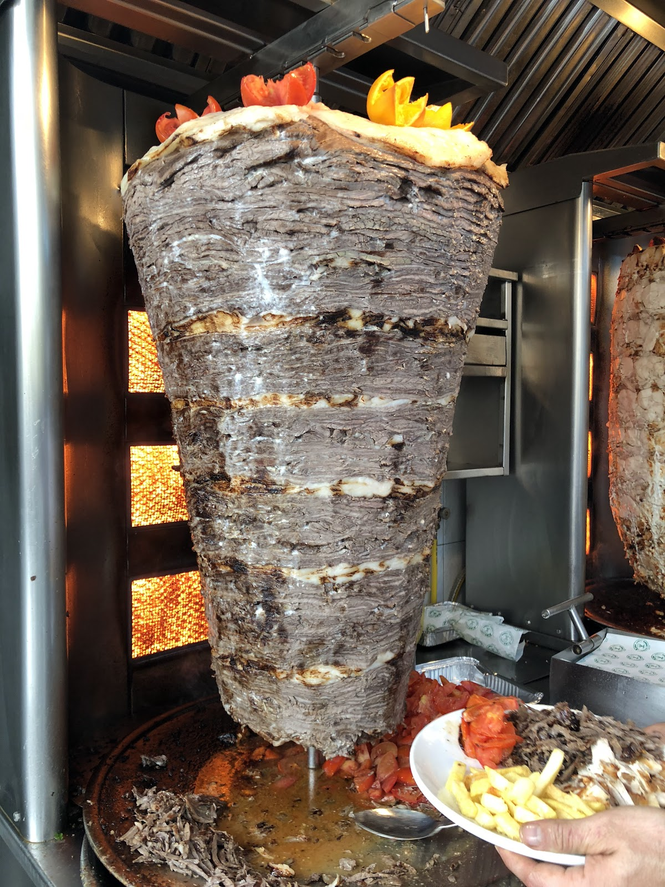
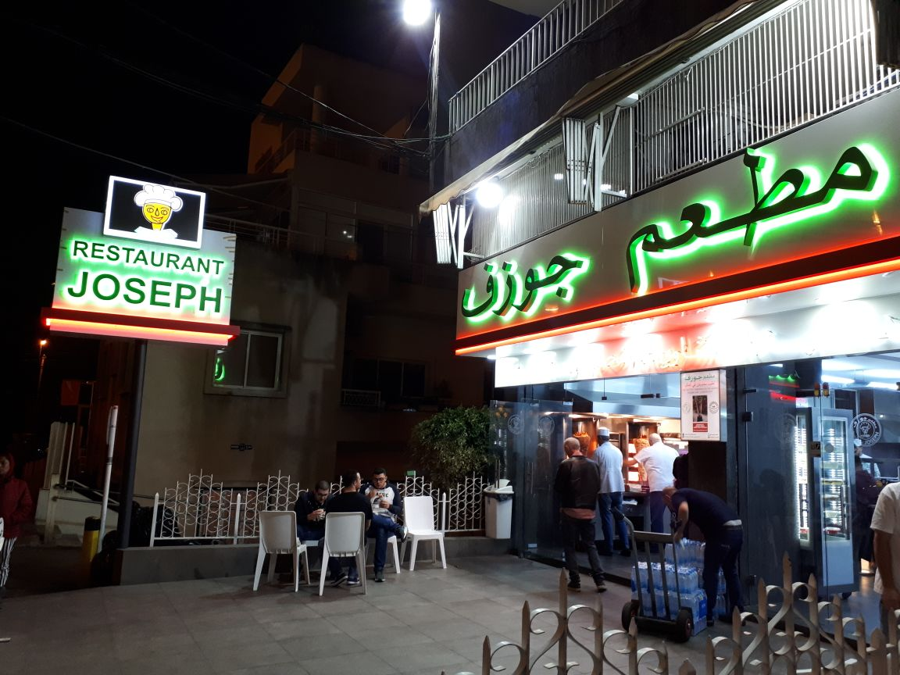
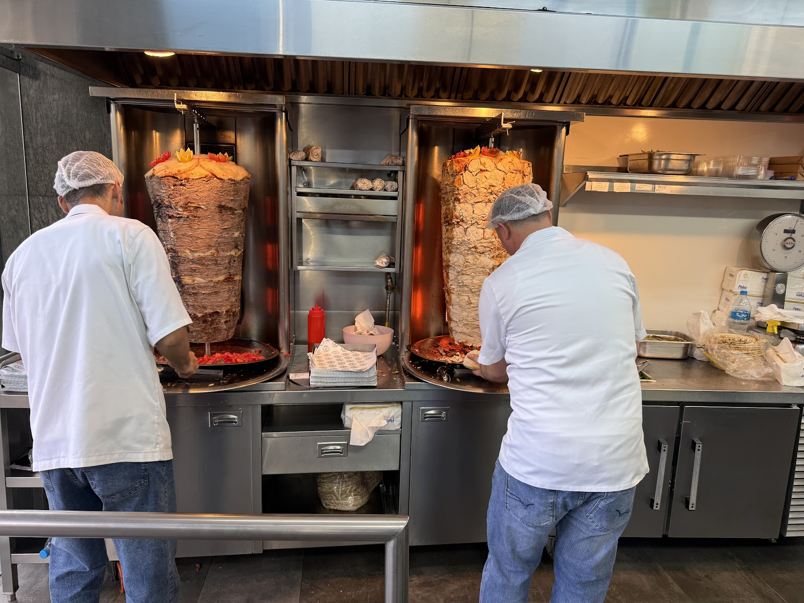
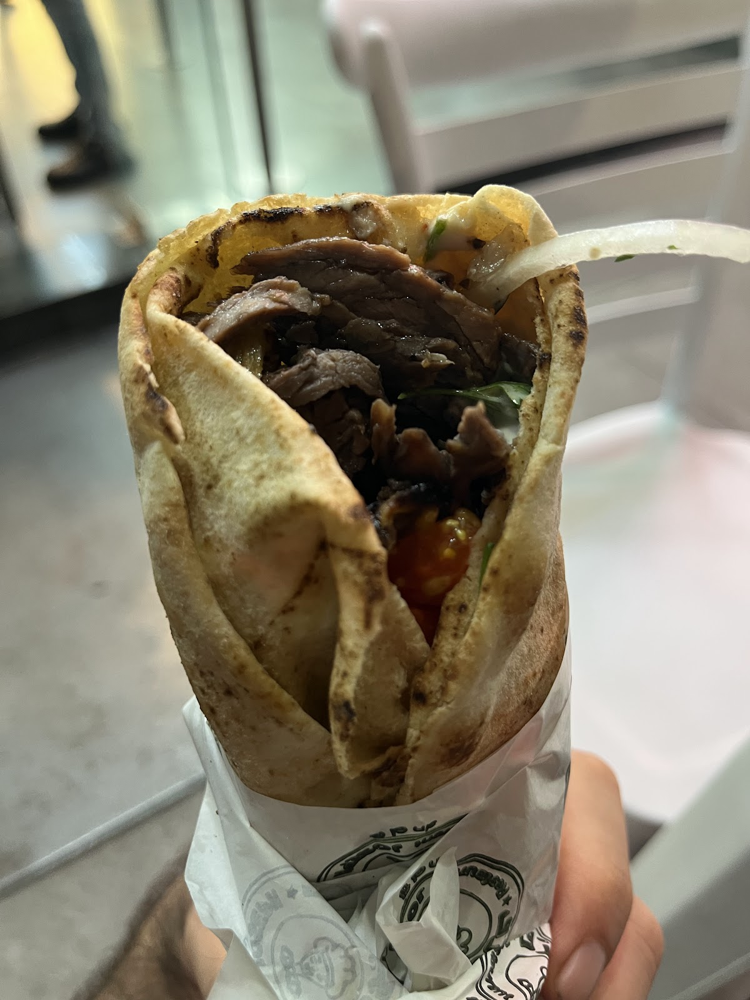
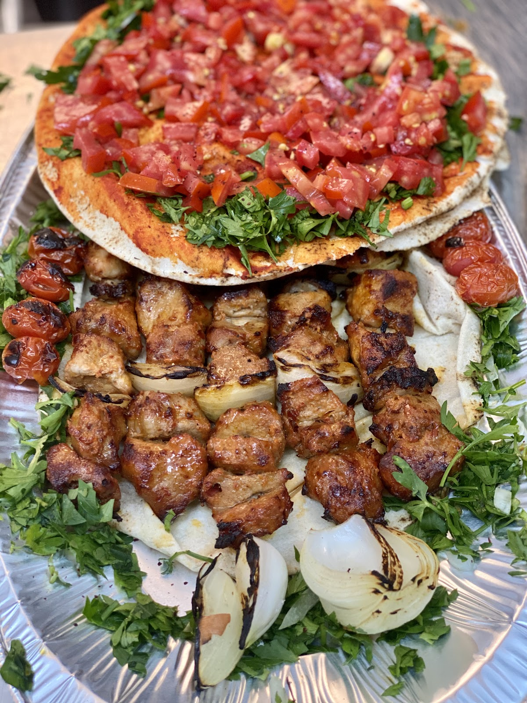
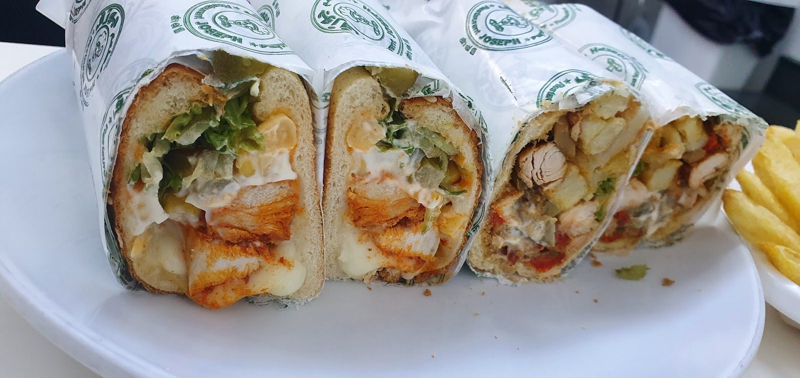
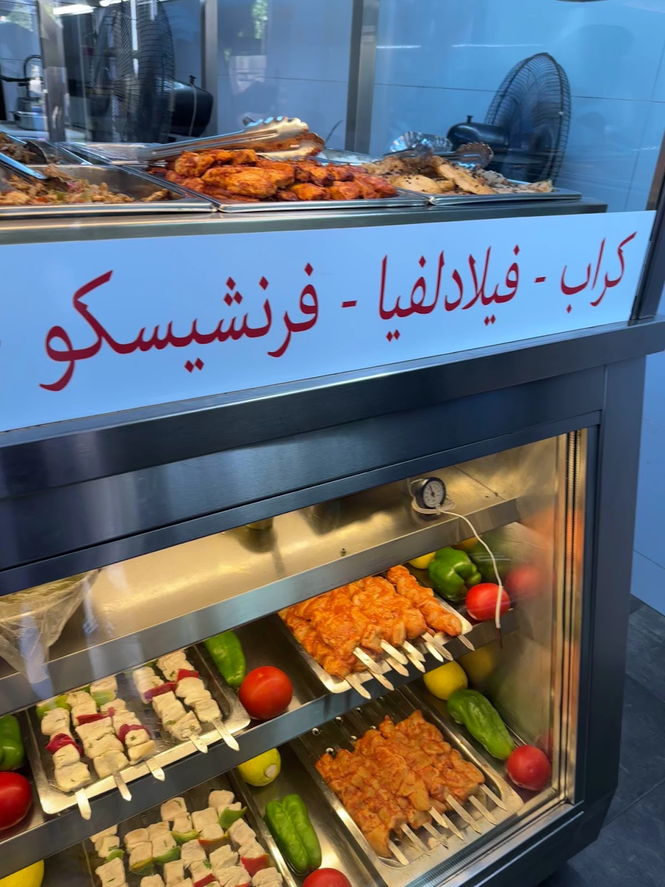

مطعم جوزيف
4.3 ★







On one hand, the meat shawarma was absolutely incredible! It was perfectly seasoned, juicy, and very well prepared by the best chef in the house,definitely a highlight.Ismail AS
A must-visit spot for Shawarma loversCesar Nasr
Restaurant Joseph in Sin El Fil is one of those classic spots that people keep coming back to for a reason.Roy Chalhoub
| 12:30–11:30 PM | |
| 12:30–11:30 PM | |
| 12:30–11:30 PM | |
| 12:30–11:30 PM | |
| 12:30–11:30 PM | |
| 12:30–11:30 PM | |
| 12:30–11:30 PM |
Saydeh, Lebanon
+961 1 510 520